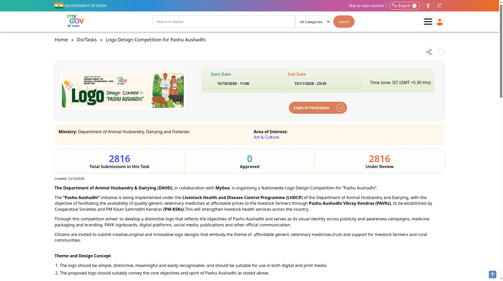

Pashu Aushadhi logo contest: ₹50,000 prize, enter by 15 November
The Department of Animal Husbandry and Dairying (DAHD), with MyGov, is inviting all Indian citizens to design a logo for Pashu Aushadhi. The winning entry receives ₹50,000 and a Certificate of Appreciation. Submit an original, unpublished design on MyGov by Sunday, 15 November 2026 at 11:45 PM IST. AI-generated or substantially AI-created entries may be disqualified.
Who can enter
The official terms say the competition is open to all Indian citizens through MyGov. It is not restricted to farmers, veterinary students or participants in another scheme. The checked public rules do not state an age limit.
What the logo should communicate
Pashu Aushadhi aims to make quality generic veterinary medicines available at affordable prices through Pashu Aushadhi Vikray Kendras (PAVKs). The department wants a simple, distinctive logo expressing animal health, trust, affordable medicines and support for livestock farmers and rural communities.
The identity may appear on medicine packaging, PAVK signs, websites, social media, publications and awareness campaigns. It needs to stay recognisable in small sizes, in print and on screens, and in monochrome.
Prepare these files
- Your original, unpublished logo, created specifically for this competition.
- High-resolution JPEG or PNG files in both colour and monochrome versions.
- A brief concept note explaining the idea and symbolism, preferably no more than 200 words.
- Keep the original editable or vector source file ready. The selected winner must provide it in a suitable format when the department requests it.
The terms do not set a specific pixel dimension or file-size ceiling. Check the live submission form for upload limits rather than assuming the specifications used by another logo contest.
Design rules to avoid disqualification
- No watermark, signature, name, initials or other identifying mark in the design.
- Do not copy, reuse previously published work or infringe anyone's copyright or trademark.
- Entries generated or substantially created using AI tools may be disqualified. Submit your own original design work.
- Make the design work across digital and print media, in colour and monochrome.
How to enter
- Open the official MyGov competition page and read the terms and conditions.
- Prepare both logo versions and the concept note.
- Choose "Login to Participate", sign in or register with MyGov, and follow the submission form.
- Submit through MyGov only, before 15 November 2026 at 11:45 PM IST. Do not send entries to an unofficial email address or third-party application site.

Prize and judging
The winning entry gets a ₹50,000 cash prize and a Certificate of Appreciation. This is a judged design competition, not a guaranteed payment for submitting.
The department may consider relevance to Pashu Aushadhi, originality, creativity, simplicity, recognition, suitability for print and digital use, scalability in colour and monochrome, overall visual appeal and clarity. It may use other criteria too. Its selection decision is final.
Rights and practical limits
- The selected logo will be made available to the department for official use connected with Pashu Aushadhi.
- The department may modify or adapt it for official applications while retaining the core design.
- Rules may be amended or updated. Read the live page again before submitting.
- Disputes are subject to courts in New Delhi; parties bear their own expenses.
What we checked
We read the live task page and the official terms published on 15 October 2026. The deadline and ₹50,000 prize are confirmed on MyGov; all-Indian-citizen eligibility and submission requirements are confirmed in the terms. We did not sign in, inspect the logged-in upload fields or submit an entry. Nothing was paid. Exact upload-size limits and an age rule were not stated in the checked public sources, so we do not claim them.
Sources: MyGov / DAHD competition page and official terms PDF. Checked 11 November 2026. Explainer by AiCoN, not a DAHD or MyGov publication.